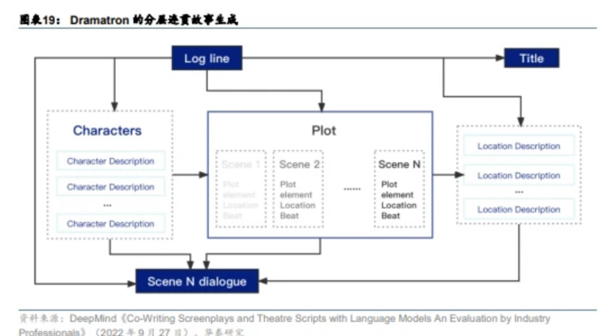
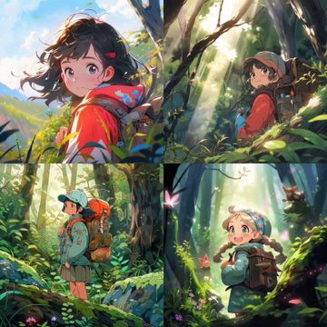
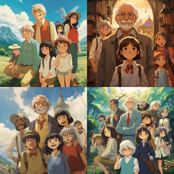

AI+前期策划：助力剧本生成和数据分析
|
|
DeepMind开发的应用语言模型Dramatron能够根据用户提供的中心句生成标题、角色、场景描述和对话。Dramatron采用分层故事生成（hierarchical story
generation）方法，从中心句（logline）开始生成脚本和剧本。用户可以在分层生成的任何阶段进行干预，实现人类和AI在交互过程中共同编写脚本。剧作家们认为Dramatron可以为人类提供灵感、构建故事背景及生成内容，并可能用于文学分析。

示例：由海马自主研发的“剧本智能评估”3.0功能，可对院线电影、网络电影、电视剧、网剧等影视作品的剧本进行智能数据化分析。项目方上传剧本文档后，“剧本智能评估”可从剧情、场次、人物维度提供AI自动化数据分析。
|
AI+中期拍摄：关注虚拟场景与虚拟人生成
|
|
在影视中期拍摄过程中，AI 能够帮助生成虚拟场景，同时在影视中引入虚拟人等，提升创 作效率，降低时间及人力成本。一方面，AI 可帮助生成动画中的场景，帮助完成高重复性
工作，或现实生活中难以实拍或成本过高的场景。另一方面，利用 AI
技术能够实现演员年龄的跨越、重现已故演员及同台呈现 CGI 角色和真人演员。
场景设计

|
|
AIGC 技术辅助商业化动画片的首支发行级别作品《犬与少年》开播。据 Netflix，2023 年 1 月 31 日，Netflix 与微软小冰、WIT STUDIO 共同创作的首支 AIGC
动画短片《犬与少年》
正式发布。《犬与少年》是一款典型的日式风格动画，主要讲述了一只机械狗与主人从幼 年到暮年，相互陪伴、相互守望的故事。在这部电影中，AI 主要负责部分动画场景的绘制。
- 【AIGC动画短片《犬与少年》-哔哩哔哩】
- 【AI智能vs真人剪辑？AI能取代我们剪辑师吗？-哔哩哔哩】
- 【不是吧！AI都能做视频了？-哔哩哔哩】
- 【AI动画革命性突破！无闪烁ai动画 真正生产力ai工具 EBsynth介绍-哔哩哔哩】
|
AI+后期制作
|
|
在画质增量、人脸替换等领域落地 后期制作阶段需完成对影视作品进行画面剪辑、配音或修音、特效制作、配乐创作、海报 及预告片宣发制作等环节，而我们观察到，AI 技术能够成熟地运用到配音、译制、剪辑、
修复、转制以及后续宣发上，实现后期制作阶段的降本增效。
辅助创作影视配乐
- 辅助影视内容由2D向3D 转制
。传统的3D影视制作模式一般由实拍+后期合成，或者纯后期2D转3D而成，但实拍模式成本高、制作流程复杂、人力消耗多、时间周期长，同时纯后期2D转3D工序对每一个制作环节要求细致，也需耗费大量的人力及资金成本，而
AI
技术推出后，能够实现将影视内容快速由2D向3D自动转制，大幅提升影视作品3D转制效率。
- 辅助宣发环节的海报及预告片创作。 在影视剧宣发环节，AI 能够快速生成宣发所需的海报和预告片，提升素材产出及宣发投放效率。
- 同台呈现 CGI 角色和真人演员。
|